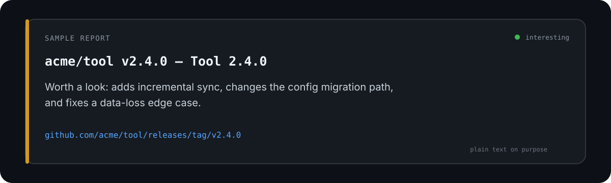
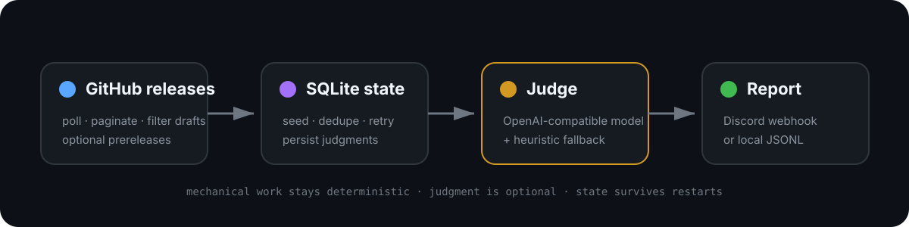

A self-hosted release monitor
GitHub releases in.
Signal out.
Repo Rat watches public GitHub releases, filters for noteworthy changes, and sends concise reports to Discord or a local JSONL log. Run it in GitHub Actions or on your own machine.
No API key required. Repo Rat's deterministic heuristic judge works out of the box. An OpenAI-compatible model is optional.
A report, not a firehose
One release. The useful bit.
Each noteworthy release gets a short summary and one direct release link.

Small, stateful, self-hosted
How it works
Repo Rat checks releases, remembers what it has processed in SQLite, judges what matters, then delivers a report or writes a JSONL record.

A few GitHub settings
Your Discord, your watchlist.
Fork Repo Rat and let your own GitHub Actions workflow do the polling.
- Fork this repositoryKeep the workflow and config in your own copy.
- Add a webhook secretIn your fork, add
DISCORD_WEBHOOK_URLunder Settings → Secrets and variables → Actions → Secrets. - Choose a watchlistOptionally set
REPO_RAT_STARRED_USERNAMEas an Actions variable to include that account's public starred repositories. The config file can also list repositories explicitly. - Enable ActionsRun the normal poll; the first normal poll quietly seeds the baseline.
Read the backfill warning · Read the full setup guide, including local installation
Before you click “backfill”
Historical releases can mean a lot of messages.
Backfill reports releases that an earlier normal poll seeded. It may send many messages at once, so leave it off for ordinary setup and use it only when you want those older reports.
Discord may expand GitHub URLs into rich link previews, which can make a busy backfill look even busier.
Open source. Your workflow.
Know what it keeps.
Repo Rat reads public release information and, if you opt in, a user's public starred repositories. Its checked-in SQLite state contains public release metadata and judgments, not webhook or API credentials. OPENAI_API_KEY is optional; without it, the heuristic judge still works.